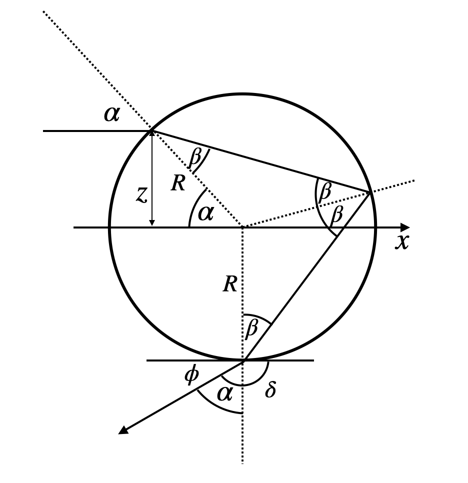

This page was generated from `/home/lectures/exp3/source/notebooks/L3/Rainbow.ipynb`_.

Rainbow¶
[2]:
## just for plotting later
import pandas as pd
import numpy as np
import matplotlib.pyplot as plt
from spectrumRGB import wavelength_to_rgb
%matplotlib inline
%config InlineBackend.figure_format = 'retina'
plt.rcParams.update({'font.size': 12,
'axes.titlesize': 18,
'axes.labelsize': 16,
'axes.labelpad': 14,
'lines.linewidth': 1,
'lines.markersize': 10,
'xtick.labelsize' : 16,
'ytick.labelsize' : 16,
'xtick.top' : True,
'xtick.direction' : 'in',
'ytick.right' : True,
'ytick.direction' : 'in',})
Deflection with one reflection¶
As the last topic of the optical elements we would like to have a look at a phenomenon, which has nothing to do with optical elements but is fun and just fits to the topic of dispersion. We will explore the rainbow and in addition a DIY version, the glassbow. To understand the rainbow we will have first a look at the reflection of rays from a single droplet.
 |
|---|
Fig.: Reflection of rays in a single drop. |
In the sketch above a light ray of white light is entering the droplet under an angle \(\alpha\) to the surface normal on the top. The ray is refracted and enters the droplet under an angle \(\beta\) to the surface normal. The angle can be calculated from Snell’s law
Inside the droplet, the ray is now hitting the water/air surface at the backside from which it gets reflected. There, the incident angle is also \(\beta\) and the ray is reflected under an angle \(\beta\) as well. At that point, most of the light will, however, exit the drop on the backside, so that only a small fraction is reflected and traveling further to hit a second time the water/air surface at the angle \(\beta\). The light refracted out at that point leaves the droplet under an angle \(\alpha\) with the surface normal due to the reversiblity of the light path. We are, however, interested in the angle \(\phi\) that the ray makes with the incident direction.
This angle \(\phi\) can be calculated from the above sketch to be
Since
such that finally
So let us have a look at this dependence of the deflection angle as a function of the incidence angle.
[3]:
alpha=np.linspace(0,np.pi/2,10000)
h2o=pd.read_csv("data/H2O.csv",delimiter=",")
n=np.interp(0.500,h2o.wl,h2o.n)
[4]:
def rainbow(alpha,n):
return(4*np.arcsin(np.sin(alpha)/n)-2*alpha)
[5]:
plt.plot(alpha*180/np.pi,rainbow(alpha,n)*180/np.pi)
plt.xlabel(r"incident angle $\alpha$ [°]")
plt.ylabel(r"deflection angle $\phi$ [°]")
plt.show()
The dependence seems to show a maximum deflection angle at an incidence angle of around \(\alpha=60^{\circ}\). This is an important finding, as the whole appearance of the rainbow depends on that.
[6]:
print('Maximum deflection angle ', np.max(rainbow(alpha,n)*180/np.pi))
Maximum deflection angle 41.78815648670841
Color of the rainbow¶
The color of the rainbow is now the result of the fact that the maximum deflection angle depends on the color of the light due to the dispersion. Since we have a refraction, reflection and another refraction, the largest maximum deflection angle is observed for red light, while the smallest one appears for blue light. The diagrams below show this result, which is in general true for materials with normal dispersion.
[7]:
plt.figure(figsize=(12,4))
plt.subplot(1,2,1)
for wl in np.linspace(0.400,0.700,100):
c=wavelength_to_rgb(wl*1000, gamma=0.8)
n=np.interp(wl,h2o.wl,h2o.n)
plt.plot(alpha*180/np.pi,rainbow(alpha,n)*180/np.pi,c=c,alpha=1,lw=1)
plt.xlabel(r"incident angle $\alpha$ [°]")
plt.ylabel(r"deflection angle $\phi$ [°]")
plt.subplot(1,2,2)
for wl in np.linspace(0.400,0.700,100):
c=wavelength_to_rgb(wl*1000, gamma=0.8)
n=np.interp(wl,h2o.wl,h2o.n)
plt.plot(alpha*180/np.pi,rainbow(alpha,n)*180/np.pi,c=c,alpha=1,lw=1)
plt.xlabel(r"incident angle $\alpha$ [°]")
plt.ylabel(r"deflection angle $\phi$ [°]")
plt.xlim(45,70)
plt.ylim(40,43)
plt.tight_layout()
plt.show()
This order of the colors is actually true for all incident angles, which raises the question, why the rainbow is actually colored. The blue color of a certain incidence angle would actually overlap with the green color of a different incidence angle and the red color of an even different incidence angle. If you select a specific outgoing angle under which you observe the rainbow, let us say 41°, then you find under this observation angle all color and, therefore, should observe always white light.
This is actually true if you look at the inside of a rainbow. You clearly recognize that inside the rainbow it is much brighter than outside. Yet when you reach the maximum angle of each color, you have a region, where even for larger angles for the incidence angles, the deflection angle does not change. Thus, if you assume you send in rays at constantly spaced incidence angles, you will have more rays with a deflection angle close to the maximum. The diagram below just counts the number of deflection angles in the different for each color and you clearly see that around the maximum deflection angles for each color you have a strong peak.
[8]:
plt.figure(figsize=(5,6))
for wl in np.linspace(0.400,0.700,4):
c=wavelength_to_rgb(wl*1000, gamma=0.8)
n=np.interp(wl,h2o.wl,h2o.n)
plt.hist(rainbow(alpha,n)*180/np.pi,bins=200,color=c,alpha=0.6,lw=1);
plt.xlabel(r"deflection angle $\alpha$ [°]")
plt.ylabel(r"intensity [a.u.]")
plt.xlim(30,45)
plt.show()
Thus, around each droplet on the sky, there is a cone of deflected light reflected back from the sun. On the outside of that cone is red light under an angle of almost \(42^{\circ}\) while on the inside edge we find blue light and finally white light (see left image below). We just have to connect that to the observer now. This is shown in the right sketch. The rainbow, therefore, results from the fact that we look at different height at different edges of the cone.
|
|---|
Fig.: Deflection cones of different color on a single drop in a rainbow and rainbow as a result of the observation of the cones. |


Rainbow¶
The photos below show a rainbow, where you should see the enhanced white color in the center of the rainbow, the color order of the bow itself and the darker region outside. But there is also a second rainbow appearing on the outside.
|
|---|
Fig.: Double rainbow over the Grand Canyon. (c) Picture by Frank Cichos |

This second outside rainbow has a reversed color order and is weaker than the inside rainbow. This secondary rainbow comes from a process involving two refractions and two reflections inside each drop.
|
|---|
Fig.: Zoom into the rainbow over the Grand Canyon. (c) Picture by Frank Cichos |

Glassbow¶
You can observe a beautiful rainbow at home if you just have a few glass beads. You can get these glass beeds from us. They have a diameter of about 200 µm. If you place them on a black background and use a flash lamp, you will observe a nice rainbow as Mr. Märcker did in the photo below. The main difference is the observation angle. Try to calculate the new observation angle for the refractive indices of glass.
|
|---|
Fig.: Reflection of rays in a single drop. (c) Picture by Axel Märcker. |